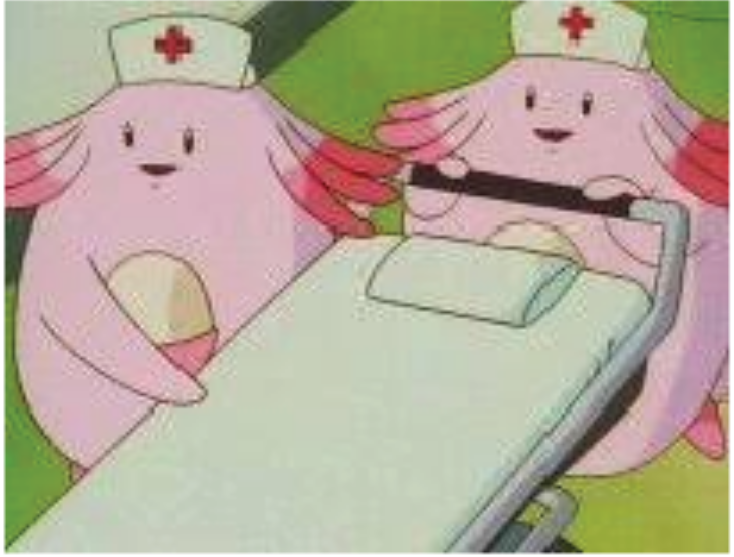

About Us
The Pokémon Center is a non-profit organization that strives to improve the lives of Pokémon trainers across the world of Pokémon. We are a non-profit organization that provides a variety of services to Pokémon trainers for no cost as they journey across the region, as well as being a place for you and your Pokémon to rest or hang out during your long adventure. Whether you are trying to become a Pokémon League Champion, collecting Pokémon to complete your Pokédex, or just want to grow a bond with your Pokémon, the Pokémon Center is there to aid you on your journey.
Meet The Staff
Nurse Joy
Nurse Joy is typically found behind the counter of each Pokémon Center desk. She will help assist you with the Pokémon Healing Machine, and can hekp if you have any other questions involving Pokémon. Nurse Joy and her many identical sisters of the same name work at Pokémon Centers in the Kanto, Johto, Hoenn, and Sinnoh regions.
Chansey
Chansey are Nurse Joy's assistants in the Pokémon Center. According to the Pokédex, Chansey will share their eggs with injured Pokémon and people. As a result, they are often referred to as doctor's doubles.